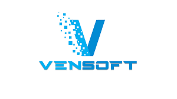

Acerca de nosotros

Los servicios ofrecidos por Vensoft comprenden diversos ambitos de la informática. Analizamos de manera exhaustiva los requerimientos de su empresa, buscando la solución que mejor se adapte a sus necesidades.
Los profesionales especializados de nuestra firma llevan a cabo actividades de análisis, diseño, construcción, pruebas e implementación de sistemas de información a la medida de las necesidades de nuestros clientes.
Nuestra división de consultoría de sistemas está formada por experimentados profesionales de cada área, que suministran servicios de asesoría, planeación e implementación de plataformas tecnológicas para el soporte de aplicaciones y administración de bases de datos.
Vensoft ofrece a su empresa un servicio integral de consultoría en informática y nuestra especialidad se concentra en las siguientes áreas:
Desarrollo de software Soporte y asesoria especializada en BD
Asistido por profesionales especializados en instalación, administración, afinamiento, backup, recuperación, porgramación y migración de bases de datos Oracle, MySql, Sql Server y Postgresql.
Desarrollo de software Diseño y desarrollo de software
A la medida del cliente, incluyendo aplicaciones de negocios, integración de sistemas existentes, programación tradicional, programación web, dispositivos móviles y bases de datos utilizando herramientas de desarrollo java, android, pl/sql, .net, php, python, JavaScript y HTML5.
Desarrollo de software Servicio de Outsorcing
COSOURCING, INHOUSE , OFFSHORING, entre otros ...
Desarrollo de software Staffing (Suministro de personal)
Contamos con personal junior y/o senior de acuerdo a su necesidad
Desarrollo de software Capacitacion para certificación Internacional
Preparamos por competencias para el trabajo y para presentar exámen de certificación internacional en convenio con Aula Matriz en áreas como Oracle, Microsoft, Android, Linux entre otros
Desarrollo de software Auditoría de sistemas de información
Revisión y evaluación de procesamiento de datos y análisis de procedimientos de administración del sistema, con el propósito de determinar la utilización eficiente de los recursos tecnológicos.
Desarrollo de software Consultoría
Para la adquisición e implementación de sistemas de información, incluyendo integración de sistemas,programación de aplicaciones y especificaciones de hardware.
Desarrollo de software Estrategias de promoción
De negocios y comercio electrónico en el internet.